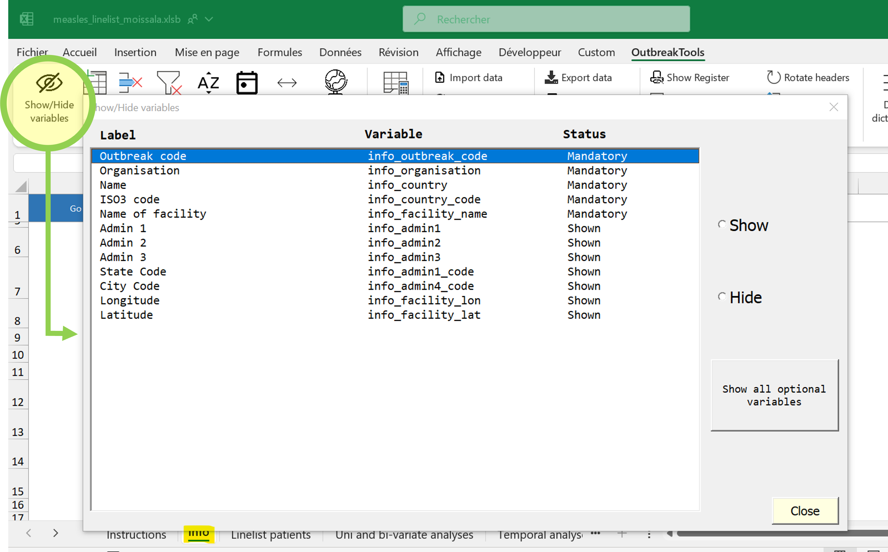
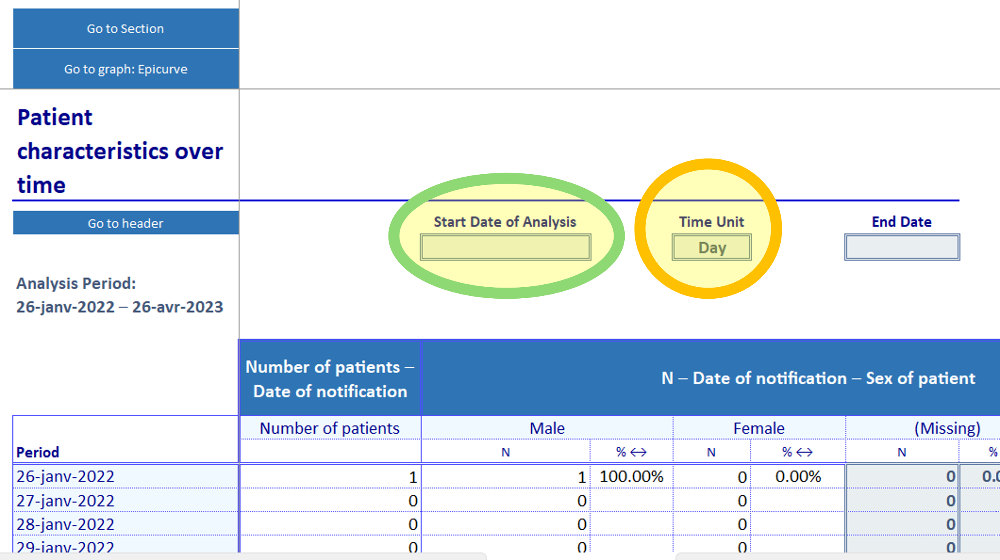
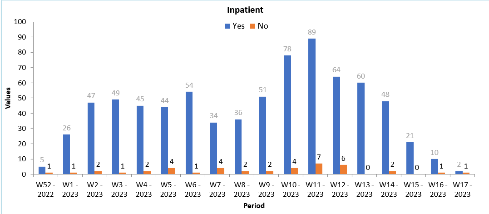

Tutoriel
A propos de ce tutoriel
Dans ce tutoriel vous découvrirez l’interface des listes linéaires OutbreakTools1 et le tableau de bord correspondant.
1 Pour rappel, toutes les listes linéaires OBT ont la même interface
🯠Objectifs
- Explorer les fonctionnalités de la liste linéaire OBT, en insistant sur la résolution de problèmes et l’exploration des analyses
- Accéder au tableau de bord et savoir l’utiliser pour explorer les données
🧠Contexte
MSF travaille dans l’est et le sud du Tchad depuis 2006 et fournit des soins médicaux et une assistance aux personnes déplacées et aux communautés locales dans un contexte d’accès difficile à la nourriture.
En décembre 2021, suite à plusieurs signalements de cas de rougeole dans la région méridionale de Mandoul, MSF a décidé de répondre à l’épidémie avec Epicentre en soutien.
Une liste linéaire est nécessaire pour collecter les données des patients dans les structures. Vous discutez avec le MedRef et le MedCo, et prenez la décision de déployer la liste linéaire rougeole OBT.
Activités
Vous utiliserez plusieurs fichier lors de ce tutoriel :
- une liste linéaire vide à préparer avant un déploiement
- une liste linéaire avec de fausses données pour répliquer une liste linéaire en cours d’utilisation
- une liste linéaire avec de fausses données et quelques problèmes à résoudre.
Vous visiterez ensuite le tableau de bord intersection pour explorer les données réelles de MSF sur la rougeole au Tchad.
Les explications seront données dans le texte ou dans des encadrés (conseils, notes, etc.) et les instructions seront données dans des encadrés spécifiques :
Je suis une information importante
Je suis une information utile mais qui peut être omise si vous êtes pressé par le temps, mais je mérite qu’on me lise à un moment.
A votre tour !
Préparation
Téléchargez et dézippez les documents
Les fichiers que vous devrez utiliser sont stockés sur GitHub dans une archive zip.
- Cliquez sur le bouton ci-dessous pour télécharger l’archive. Enregistrez-la sur votre ordinateur (dans vos Téléchargements par exemple)
- Dézippez l’archive pour sauvegarder les fichiers localement. Il est conseillé de dézipper vers un emplacement qui n’est pas activement synchronisé avec OneDrive en ce moment.
Contenu de larchive
- Une liste linéaire OBT rougeole à jour (version standard), vide
- La même version de fichier, mais avec des données rougeole (simulées)
Partie 0 : débloquer les fichiers et les macros
Les listes linéaires OBT utilisent des macros VBA pour ajouter des fonctionnalités. Cela fait qu’elles doivent souvent être déloquées sur votre ordi lorsque qu’elles proviennent d’internet, et vous devrez autoriser l’exécution des macros.
Débloquez les fichiers ou assurez-vous qu’ils le sont déjà . Si vous ne l’avez jamais fait auparavant, suivez ces étapes
En fonction du niveau de protection de votre ordinateur et de la source des fichiers, vous aurez peut être à le faire ou non. Par contre, les ordinateurs terrain sont souvent plus protégés et il est très probable que vos collègues aient à le faire, donc soyez prêt à expliquer ces étapes.
Partie 1 : préparer et déployer une liste linéaire
Obtenir les fichiers nécéssaires
Un modèle de liste linéaire
Dans la vraie vie il vous faudra un modèle vide pour vous lancer, mais dans le cadre ce cet exercice vous utiliserez le fichier vide inclus dans l’archive que vous avez téléchargée.
Identifiez le fichier correct et faites une copie pour pouvoir travailler dessus.
Une géobase adaptée
Rendez-vous sur le site de la GeoApp et téléchargez une base géographique pour le Tchad. Vous pouvez lire un résumé des étapes ici, ou directement sur le site, à l’ouverture.
Le fichier n’est pas protégé, vous pouvez l’ouvrir si vous êtes curieux.
Préparer une liste linéaire
Ouvrez la liste linéaire et inspectez les onglets
Notablement :
- La première feuille contient un guide d’utilisation (qui sera bientôt traduit), il n’y a rien à faire dessus
- La deuxième feuille (“Info”) contient des informations sur le projet et le site (métadonnées)
- La troisième feuille (“Linelist patients”) contient les données des patients
- La plupart des feuilles suivantes contiennent des analyses.
Localisez le menu OutbreakTools, nous allons l’utiliser intensivement pendant les exercices.

Remplir les métadonnées
Métadonnées obligatoires
Remplissez la feuille “Info†(métadonnées) :
Organisation: entrez votre nom de sectionNom du pays: TchadNom de la structure: Moïssala Hospital
Une fois que ces champs sont remplis, ils ne devraient plus être modifiés. Ces informations seront utilisées au moment de la création d’exports.
Métadonnées optionnelles
Rentrez les infos des champs Admin 1 (Mandoul) et Admin 2 (Moissala)
Cacher les champs non utilisés
Vu que l’on n’a pas utilisé les autres champs, cachons-les !
En gardant le focus sur la feuille “Info”, rendez-vous dans le menu OBT. Cliquez sur le bouton “Afficher / Masquer les variables”.
Une fenêtre pop-up s’ouvre :

Vous pouvez voir que certaines variables ont un statut Obligatoire; ces variables ne peuvent être cachées avec cet outil. D’autres variables ont le statut Affiché et elles peuvent être cachées.
Cachez les variables que l’on n’a pas remplies. Vous pouvez soit les cacher unes par unes, soit utiliser le bouton “Cachez toutes les variables optionnelles†deux fois et dé-cacher les variables que l’on veut voir.
Importer la géobase
Cliquez sur le bouton “Importer une géobase†dans le menu OBT pour importer la base géo que vous avez téléchargé précédemment.
Après avoir reçus le message de confirmation, vous pouvez vérifier l’import en allant sur la feuille des données patients, et en regardant les colonnes “géo†(dont le fond est de couleur saumon). Si tout s’est bien passé :
- Les labels devraient avoir été mis à jour avec les noms des niveaux administratifs présents dans la géobase (e.g. “adm1_name†va devenir “Province†pour la RDC).
- Les cellules de la première colonne (admin 1) devraient contenir un menu déroulant avec les valeurs importées depuis la géobase.
Vous pouvez remplir les colonnes géographiques soit à partir des menus déroulants en cascade (en commençant pas le niveau 1), soit en utilisant le bouton GeoHelper du menu OBT.
Il y a une hiérarchie entre les niveaux administratifs : si vous essayez de remplir la colonne 3 sans avoir rempli les colonnes 1 et 2 le menu déroulant apparaitra comme vide.
Paramétrer le jour de la semaine
Cliquez sur le bouton “Début de semaine†du menu OBT et choisissez le “Lundi†comme premier jour de la semaine.
Cachez / montrer des variables
On peut aussi cacher ou montrer les variables optionnelles sur la feuille des données patients. Lorsque vous préparez une liste linéaire, il vous faut décider quelles variables collecter en fonction informations dont vous avez besoin2.
2 Vous pouvez cacher ou montrer des variables plus tard, pendant la collecte des données si besoin, mais dans ce cas gardez en tête que les données pour ces colonnes ne seront que partielles.
Placez vous sur la feuille “Linelist Patients†et cliquez sur le bouton “Afficher/Masquer des variables”. Cachez toutes les variables optionnelles à l’aide du bouton, et dé-cachez manuellement :
- Structure déclarante
- Fièvre
- Eruption maculopapulaire
- Toux
- Yeux rouges - conjonctivite
- MUAC
- Enceinte
- Les variables “extra†à la fin
- N’importe quelle variable calculée que vous souhaitez voir (numéro de semaine, groupe d’âge etc.)
Imprimer un registre
Cliquez sur le bouton “Afficher le registre†du menu OBT.
Cela ouvre une feuille qui est cachée par défaut pour préparer un registre à imprimer, au cas où il n’y en aurait pas déjà un dans le centre.
En règle générale, il devrait y avoir moins de colonnes dans le registre que dans la linelist, vu que certaines des informations viennent du dossier patient ou d’autres sources.
Une fois sur la nouvelle feuille, cliquez sur le bouton “Afficher/masquer les variables†pour ouvrir la fenêtre pop-up pour le registre.
Cliquez sur le bouton “Correspondre au Show/Hide de la linelist†pour aligner la visibilité des variables du registre sur celles de la feuille patients.
Cachez les variables qui n’ont pas besoin d’être dans le registre.
Maintenant que vous avez sélectionné les variables à imprimer, il faut améliorer un peu l’aspect pour qu’il soit plus pratique à utiliser :
- Ajuster la largeur des colonnes pour que les encodeurs de données puisse écrire
- Changer l’orientation des labels pour gagner de l’espace s’il n’y a pas grand chose à écrire
- Ajouter des lignes à la table pour qu’elle fasse une page3.
3 Astuce: il y a un bouton pour ça dans le menu OBT !
Ajustez la largeur des colonnes :
Nom / Prénom: plus largeSexe: moins large
Pour voir, cliquez sur le bouton “Imprimer†(toujours dans le menu OBT menu). Remarquez le bouton “Mise en page†en haut à gauche, qui contrôle les paramètres d’impression.
Une fois que vous avez pris connaissance de ces boutons, vous pouvez sortir de l’aperçu avant impression puis cliquer sur le bouton “Fermer le registre / CRF†pour cacher la feuille registre (vos modifications sur cette feuille demeurent).
Préparer un formulaire des cas
Avec la même idée que pour le registre il est possible d’imprimer un formulaire de cas à partir de la liste linéaire s’il n’y en a pas déjà un dans la structure. Un bouton affiche une feuille préparée automatiquement. Créer un CRF propre est au delà des capacités d’OBT pour le moment, mais ce brouillon devrait être une base et vous faire gagner du temps.
Choses que vous pourriez faire :
- Cacher les variables collectées à un autre endroit ou calculées
- Cacher / condenser les lignes vides
- Raccourcir des labels4.
4 Désormais, une option a été rajoutée au ficher setup pour donner des labels courts ou des acronymes, mais ils n’ont pas été remplis pour toutes les listes linéaires OBT en circulation pour le moment.
Préparer un CRF propre nous prendrait trop de temps, nous ne le ferons pas lors de ce tutoriel, mais n’hésitez pas à ouvrir la feuille un instant avec le bouton “Afficher le CRF†pour voir à quoi elle ressemble.
Déployer la linelist
Nous avons fait le tour des préparations principales à effectuer sur la liste linéaire. N’oubliez pas d’enregistrer votre fichier.
Vous pouvez à présent l’envoyer à vos collègues. S’ils ont déjà travaillé avec des linelists OBT (y compris sur d’autres maladies), c’est facile : toutes les listes linéaires OBT ont la même interface, ils devraient se sentir à l’aise.
Si vos collègues n’ont pas travaillé avec une liste linéaire OBT, il faut leur montrer en particulier :
- Comment débloquer le fichier et autoriser les macros
- le menu OBT
- Comment remplir les métadonnées sur la feuille “Info†(s’il en reste à remplir)
- Comment exporter les données vers le tableau de bord
- Comment utiliser le bouton GeoHelper
Le plus souvent il devrait y avoir une liste linéaire par site.
Partie 2 : usage de la liste linéaire
🧠Contexte
La linelist a été déployée en Janvier 2022 à Moissala et les zones alentour. Un peu plus d’un an plus tard, en avril 2023, l’épidémie fait toujours rage, et la linelist est toujours utilisée. Vous recevez le fichier avec les données régulièrement pour le suivi de l’épidémie…
Nous allons dans cette partie travailler sur le fichier linelist_rougeole_mandoul.xlsb qui contient des données rougeole simulées5.
5 En essayant au maximum d’utiliser les paramètres des linelists rougeoles de MSF, au moins pour les variables principales, ce qui nous évite des problèmes de confidentialité.
Contrôles de routine
Lorsque vous recevez une liste linéaire avec des données, nous vous conseillons d’effectuer quelques vérifications basiques pour avoir une idée de l’état du fichier et des données. Ce ne sont pas les vérifications longues, complexes ou complètes que vous effectueriez si vous étiez responsables du suivi qualité des données, ou si vous vouliez effectuer des analyses. Mais ces vérifications vont vous aider à détecter les sources de quelques problèmes plus rapidement.
Contrôle du fichier
Est-ce que le fichier est endomagé / corrompu ?
- Est ce que les boutons du menu OBT semblent normaux / leurs étiquettes lisibles ?
- Testez un bouton (comme le “Montrer / Cacher les variables”) : est ce qu’il fonctionne normalement ?
- Est ce que les feuilles attendues sont présentes ?
Si les boutons du menu OBT ont des noms bizarres, ou pas de noms du tout, c’est probablement que le VBA a été bloqué, ou, plus rarement, a planté. Vérifiez les autorisations des macros, ajustez-les si besoin, fermez Excel puis réouvrez le fichier.
Si le problème persiste, tentez un “Exporter pour migration†pour transférer les données vers une linelist vide. Si l’export ne fonctionne pas parce que le VBA s’est corrompu, contactez l’équipe EpiDS qui vous aidera à transférer les données.
Effectuez ces vérifications sur le fichier linelist_rougeole_mandoul.xlsb.
Contrôle (basiques) des données
- Est-ce que les métadonnées sur la feuille “Info†sont correctement remplies6?
- Est-ce que tous les patients ont un numéro ?
- Est-ce qu’il y a des numéros de patient dupliqués ?
- Vérifiez quelques colonnes contenant des dates à l’aide des filtres : est ce que les dates sont dans le bon format et sont raisonnables (min, max) ?
- Vérifiez quelques colonnes contenant des catégories (
sexe,sortie…) pour voir si les catégories sont rentrée correctement - Enlevez tous les filtres présents sur les données (il y a un bouton dans le menu OBT pour gagner du temps)
6 90% des problèmes liés à l’export vers le tableau de bord sont liés à ça.
Effectuez ces vérifications sur le fichier linelist_rougeole_mandoul.xlsb.
Analyses
Maintenant que nous nous sommes convaincu que le fichier n’est pas cassé, et que les données ne sont pas horribles, penchons nous sur les analyses descriptives embarquées dans la liste linéaire.
Bien que l’interface générale soit la même pour toutes les listes linéaires OBT, les analyses sont encodées dans le fichier setup et varient donc d’une maladie à une autre, en fonction de ce qui a été demandé. Ceci étant dit, la majorité des listes linéaires OBT contiennent des analyses uni et bivariées, ainsi que des analyses temporelles et spatiales.
Il y a quelques point à retenir sur les analyses dans les listes linéaires OBT :
- Les analyses doivent être mises à jour manuellement avant utilisation.

Si vous filtrez les données dans la feuille patients, cela sera reflété dans les analyses après mise à jour (un texte en rouge vous avertira que c’est le cas).
Vous pouvez modifier l’apparence des graphiques (qui sont crées automatiquement et, nous le concédons, peu moches par défaut). Vous pouvez pour cela utiliser les outils classiques d’Excel, comme vous le feriez pour vos propres figures7.
7 Malheureusement, les modifications des graphiques ne peuvent pas être migrées vers une autre linelist, donc je vous conseille de vous restreindre aux graphes qui sont peu lisibles, que vous exportez régulièrement dans des rapports ou présentations, ou qui vous font vraiment saigner les yeux.
Nous allons commencer par explorer les analyses sur les données non filtrées.
Placez-vous sur la feuille contenant les données patients
Tapez sur la touche F9 (force le calcul de toutes les formules)
Ouvrez le menu OBT et cliquez sur le bouton pour nettoyer tous les filtres.
Ensuite, mettez à jour les analyses.
Maintenant que les analyses sont prêtes, nous allons pouvoir les explorer.
Personnes : analyses uni et bivariées
Cette feuille contient des tableaux à simple et double entrée et des diagrammes en bâtons décrivant des informations basiques sur les patients : démographie, symptomes, sorties etc.
Explorez la feuille et répondez aux questions suivantes :
- Quelle est la durée de séjour moyenne ?
- Combien de patients ont plus de 15 ans ?
- Combien de patients sont des femmes ou des filles ?
- Quel est le pourcentage de rougeole compliquée ?
- Combien de patients sont malnutris sévère (MAS) ?
- Combien de patients sont décédés dans la structure de santé ?
- Combien de patients sont des garçons de moins de cinq ans ?
- Combien de patients MAS sont positifs au test palu ?
Intéressons nous à présent aux caractéristiques des patients décédés.
Retournez dans la feuille des données patients. Utilisez les filtres pour sélectionner seulement les patients décédés (dans le centre ou dans la communauté, comme vous voulez).
Rafraîchissez les analyses et retournez sur la feuille des tableaux simples.
- Combien de filles entre un et quatre ans sont décédées ?
- Combien de patients décédés étaient malnutris modérés (MAM) ?
Temps : analyses temporelles
Maintenant allons sur le feuille “Analyses temporelles”. Sur cette feuille, vous pouvez choisir l’échelle temporelle à explorer : jours, semaines, mois etc. La table contient 53 lignes, et peut donc montrer :
- un zoom sur une période de 53 jours (début de l’épidémie par exemple)
- un an de données (53 semaines)
- 53 mois, pour des épidémies longues
- 53 quarts d’années ou années (utilisation rare, pas pour une linelist patient)

Les courbes épidémiques sont en dessous des tableaux.
Cette liste linéaire contient un seul gros tableau, mais d’autres linelists peuvent contenir plusieurs tableaux, organisés en sections. Les graphiques seront tout le temps après les tables.
- Enlevez les filtres qui étaient sur les données et mettez à jour les analyses.
- Vérifiez les dates de notification des cas minimum et maximum. Quelles sont les unités à considérer pour les analyses temporelles ?
- Dans un premier temps, utilisons l’unité
semaine. Est-ce que toutes les données sont représentées dans la table ? - Combien de patients ont été déchargés lors de la semaine 18 de 2022 ?
- Maintenant, changez la date de début de période pour ne faire afficher que les semaines de 2023.
- Combien de patients étaient hospitalisés dans la seconde semaine de Janvier 2023 ?
- Changez les unités en
Mois. Combien de patients ont été admis en Janvier 2023 ?
Maintenant, allons voir les graphiques. Vous devriez voir un graphique similaire à celui-ci :

C’est suffisant pour établir l’état de l’épidémie, mais vous ne voudriez pas exporter la figure en l’état dans un rapport ou une présentation. En plus d’améliorations cosmétiques de l’apparence, il faudrait utiliser les filtrer du graphique pour cachez les semaines vides à la droite du graphique :
- sélectionner le graphe : quelques boutons apparaissent alors dans le coin en haut à droite.
- utiliser le bouton pour filtrer pour filtrer les catégories que vous ne voulez pas voir (icone en forme d’entonnoir, le dernier).
N’oubliez pas d’enlever ou d’ajuster les filtres lorsque vous ajoutez de nouvelles données, ou vous ne les verrez pas sur le graphique !
Le corolaire est que si un collègue vous demande de l’aide sur une linelist où les données sont à jour dans la table mais n’apparaissent pas sur le graphique, les filtres sont probablement la source du problème

Lieu : analyses spatiales
Rendons-nous maintenant sur la troisième feuille d’analyses. Elle nous montrer le top 30 des zones de résidence des cas, et en dessous, le top 30 des zones d’origine des cas (pour les patients qui ne font pas partie de la population d’accueil)8.
8 Le nombre 30 est défini dans le fichier setup et pourrait être différent dans une autre liste linéaire
Vous pouvez sélectionner le niveau administratif auquel vous voulez voir les données (1 à 4).
Cliquez sur le bouton bleu “Sélectionnez votre niveau administratif†et testez les différentes options.
- Quels niveaux ont des données (intéressantes) ?
- Combien de patients y-a-t’il à Moissala Est ?
Pour cette linelist, les données intéressantes sont au niveau “zone de responsabilité†(niveau admin 3), mais en fonction de vos données, d’autres niveaux pourraient être pertinents à regarder, si les personnes voyagent beaucoup, ou si vous avez crée une liste linéaire “master†à partir de plusieurs fichiers par exemple.
Lieu et temps : analyses spatio-temporelles
La dernière feuille d’analyse est un hybride entre la feuille d’analyse temporelle et celle d’analyse spatiale : elle vous permet de suivre ne nombre de cas dans quelques endroits de votre choix au cours du temps.
Allez sur la feuille d’analyses spatio-temporelles
Placez votre curseur sur une des cellules bleu clair à gauche (commençant à la cellule
C14)Cliquez sur le bouton “GeoHelper†du menu OBT et sélectionnez Moissala Est (niveau admin 3)
Allez à la cellule bleu suivante, et répétez les étapes pour sélectionner un autre endroit d’intérêt (vous pouvez regarder le top 30 de la feuille d’analyse spatiale pour identifiez des lieux d’intérêt, ou vous intéresser à un lieu avec des cas récents)

Nous arrivons à la fin de notre grand tour des feuilles d’analyses.
Partie 3 : résolution des problèmes de la liste linéaire
🧠Contexte
Vous avez déployé la liste linéaire sur le terrain. Une personne chargé de l’entrée des données débute sur le fichier OBT et vous demande de l’aide.
Identifiez la source des problèmes suivants et proposez une solution.
Ouverture du fichier et autorisations
Problème : votre collègue ouvre le fichier et va sur le menu OBT comme vous lui avez expliqué, mais les boutons ne marchent pas, et n’ont pas de description (ou la description est du charabia).
Les macros ne s’exécutent pas ou pas correctement. Le plus probable est que les macros ne sont pas autorisées; plus rarement, le projet VBA ne s’est pas lancé correctement ou a planté. Que se passe-t-il ?
Demandez leur de fermer et réouvrir le fichier pour voir si ça résout le problème (en particulier si la linelist marchait chez eux avant). Si le problème persiste, vérifiez que le fichier est bien débloqué, et qu’ils ont bien autorisé les macros (voir Section 3).
Méconnaissance générale du fichier
De nombreuses questions que vous pourrez avoir viennent du fait peu de gens lisent la documentation. En particulier, il est facile de manquer le menu OBT si one ne nous l’a pas montré. La bonne nouvelle est que un grand nombre de requêtes sont faciles à régler.
Plus de place !
Vous recevez le mail suivant :
Hello, j’ai joint une linelist qui nous cause des problèmes. Certaines cellules sont bloquées alors nous ne pouvons pas ajouter de nouveaux cas. Ca nous empêche de travailler alors aidez-nous s’il vous plait.
Comment résoudre le problème ?
Il faut utiliser le bouton “Ajouter des lignes†du menu OBT pour ajouter des lignes au bas de la feuille.
Note: les versions récentes de la liste linéaire ajoutent automatiquement cinq nouvelles lignes lorsque l’on rentre des données dans la dernière ligne, donc ce problème devrait devenir moins courant. Par contre, ça veut dire qu’ils utilisent une vieille version et qu’il faudrait migrer les données vers une version plus récente de la linelist !
Lignes vides au milieu
Vous recevez le mail suivant :
Bonjour, j’ai besoin de soutien sur la liste linéaire. Il y a des lignes vides (coloriées en rouge) et je ne peux pas les supprimer parce que le fichier est protégé. Pouvez-vous m’aider ?
Comment résoudre le problème ?
Utilisez le bouton “Redimensionner la table†du menu OBT, qui supprime toutes les lignes vides du tableau.
Données manquantes
Vous recevez le mail suivant :
Bonsoir, nous avons entré des données dans la base de données mais des lignes manquent alors que nous ne les avons pas supprimées.
C’est pénible car il peut y avoir plusieurs sources à ce problème (et toutes n’ont pas de solution facile) :
- Il y a un filtre appliqué quelque part et certaines lignes sont cachées
- Le document a été fermé (ou a planté) alors qu’il n’était pas sauvegardé, les données “d’hier†ou de “ce matin†ont été perdues.
- Il y a eu un problème de synchronisation de OneDrive (le fichier local, plus récent, a été écrasé par erreur par la version du serveur, plus ancienne)
- L’utilisateur a supprimé des données par erreur. Vu que la feuille est protégée, ça devrait être rare mais on n’est jamais complètement à l’abris.
Il faudra discuter avec votre collègue pour essayer de comprendre ce qui a pu se passer et voir si une version peut être récupérée quelque part. Mais commencez par vérifier les filtres au cas où ça soit un problème facile à régler. Quel bouton utiliseriez-vous ?
Le bouton “Supprimer tous les filtres†du menu OBT.
Analyses non actualisées
Vous recevez le mail suivant :
Bonjour, j’ai ajouté des données dans le fichier mais le tableau de bord est vide / pas à jour.
Comment résoudre le problème ?
Utiliser le bouton “Actualiser les analyses†du menu OBT.
Le jour suivant, vous recevez un autre message :
Bonjour, j’ai utilisé le bouton hier et ça a bien marché. Mais aujourd’hui, j’ai rentré de nouvelles données, utilisé le bouton et les analyses sont barrées. Je ne peux pas enlever le texte barré et je n’ai rien fait d’autre, juste entré les données.
Une mise à jour récente9 d’Office 365 barre les valeurs qu’Excel considère comme “obsolètes†(une valeur qui dépend d’autres valeurs, qui elles ont été modifiées). Pour des raisons que nous n’expliquerons pas ici, le bouton “Actualiser les analyses†ne suffit pas (encore) à envoyer le signal à Excel que toutes les cellules ont été recalculées. Le problème va être réglé, mais en attendant, si ça vous arrive :
9 Le problème est apparu sur certains ordis à partir de Novembre 2024.
- Sur la feuille patient, tapez F9 (raccourci pour le bouton “Calculer maintenant†du menu Excel “Formules”).
- Ensuite, utilisez le bouton “Actualiser les analyses†du menu OBT.
Si le problème vous gène souvent (et sur d’autres fichiers que les listes linéaires OBT) il est possible de désactiver cette nouvelle fonctionalité dans Excel.
Envoi des données vers le tableau de bord
Une autre source commune de problèmes est l’étape du partage des données de la liste linéaire pour qu’elles soient mises sur le tableau de bord. Il est important d’expliquer les étapes aux collègues qui devront effectuer la manip.
Pour vous entraîner, voici quelques problèmes communs; pourquoi ça ne marche pas ?
Les données ont été partagées avec le compte
via OneDrive, et n’apparaissent pas sur le dashboard. Le fichier
measles_linelist_moissala.xlsba été envoyé par mail à EPI-DATA@epicentre.msf.org et une erreur est revenue.Le fichier
measles_linelist_moissala_export_data_20250203-1136.xlsxa été envoyé par mail à EPI-DATA@epicentre.msf.org et une erreur est revenue.Le fichier
MSL_linelist__MSL24__info_country_code__info_organisation__info_facility_name__anonymous__vb-1003__20250103-1541a été envoyé par mail à EPI-DATA@epicentre.msf.org. Il n’y a pas eu d’erreur, mais les données n’apparaissent pas sur le tableau de bord pour le Tchad…
L’export pour le dashboard devrait être nommé MSL_linelist__MSL24__TCD__MSF-OCP__Mandoul Hospital__anonymous__vb-1003__20250103-1541
Soit le fichier de la liste linéaire entier ou le mauvais export (export pour la migration) ont été envoyés, soit le bon fichier a été envoyé, mais les métadonnées n’étaient pas remplies correctement sur la feuille “Info”.
Problèmes avancés
Parfois le problème est moins évident, ou peut avoir plusieurs causes entremêlées, et il faut enquêter un peu plus.
Ouvrez le fichier Excel resolution_problemes.xlsb de l’archive que vous avez téléchargée en début de l’exercice.
Votre collègue vous a contacté. Ille a des données pour le début de Janvier 2023. Les analyses ne sont pas correctes alors qu’elle ont été mises à jour.
Problème 1. Il y a des cas positifs à la rougeole dans les données, mais on ne les voit pas dans la table univariée sur le résultat du test.
Problème 2. Le registre indique qu’il y a eu 25 notifications la première semaine, et 40 la seconde, mais les chiffres sur la courbe épidémique ne sont pas corrects. Par contre, le résumé du nombre de notification total sur la feuille Univariée est correct (65 patients).
Problème 3. Il y a eu cinq patients décédés dans le centre, 3 notifiés en semaine 1 et 2 en semaine 2. Mais les chiffres sur la feuille d’analyses temporelles sont faux.
Explorer la liste linéaire et enquêtez pour trouver la cause des problèmes. S’ils sont faciles à résoudre, faites la correction. Réfléchissez à quels retours faire à vos collaborateurs pour qu’ils évitent ces erreurs ou les résolvent eux même.
Problème 1. Vérifiez les valeurs dans le dropdown menu pour la colonne incriminée, et les données entrées à l’aide du filtre.
Problème 2. Par construction, les analyses temporelles nécessitent des dates.
Problème 3. Le problème est multifactoriel. Peut être une des causes a pu disparaitre en fonction de ce que vous avez fait pour les problèmes différents.
Problème 3. Est ce que toutes les dates sont correctes ? Est-ce que toutes les catégories de la colonne “Type de sortie†sont valides ? Si oui, qu’est ce qui pourrait affecter une graphe qui nécessite une semaine épidémique ?
Problème 3. Peut être allez relire la Section 4.2 au cas où il y a un paramètre à changer…
Problème 1. Des valeurs qui ne correspondent pas au menu déroulant ont été entré de force dans la colonne. Ces valeurs sont non valides et n’apparaissent pas dans le graphe (“Pos†au lieu de “Positif”)
Problème 2. La variable “date de notification†n’a pas été vérifiée et nettoyée, et certaines valeurs ne sont même pas reconnues comme des dates par Excel. Les patients correspondant ne peuvent donc pas apparaître dans les analyses temporelles vu que les formules sur la date plantent. Par contre, le résumé général de la feuille univarié n’est pas conditionnel à la date (pas pour le nombre total de patients en tout cas), et n’est donc pas affecté par le problème.
Problème 3. Une des dates de notification était mal rentrée, et pas reconnue comme date. Une des valeurs du type de sortie avait une faute d’orthographe. Enfin, la date de début de semaine était paramétré pour le dimanche, alors que ce devrait être le lundi pour le Tchad. Regardez la colonne calculée “semaine de notification”, changez le jour de début de semaine (menu OBT) et voyez-la se mettre à jour (utilisez F9 pour recalculer si nécessaire).
Ce troisième problème était un peu vicieux, mais ça peut facilement se produire dans un pays ou le début de semaine n’est pas le même que par défaut (lundi), si quelqu’un a oublié de paramétrer le fichier.
Partie 4 : le tableau de bord
🧠Contexte
La liste linéaire est déployée sur le terrain, et vous et vos collègues avez décidé que les données devraient être envoyées à Epicentre pour compilation et affichage sur le dashboard. Ainsi, vous pourrez utiliser le tableau de bord pour suivre l’évolution de l’épidémie au Tchad, et avoir accès à la carte des cas.
Accéder au tableau de bord
Pour vous connecter au tableau de bord, il vous faut un compte; la création de ce compte est semi-automatique si vous avez une adresse MSF : allez sur cette page.10
10 Si vous n’avez pas d’adresse MSF mais pensez que vous devriez avoir accès au tableau de bord, contactez l’équipe EpiDS.
Une fois que vous avez un compte, connectez vous au tableau de bord intersection et utilisez votre compte créé pour vous connecter.
Menu des filtres
Sur la gauche (numéro “1†sur Figure 2) vous avez le menu des options, où vous pouvez filtrer les données (maladies, sections, pays, site, type de sortie etc.) et paramétrer quelques options.

- Sélectionnez “Rougeole†dans le menu des maladies
- Sélectionnez “Tchad†dans le menu des pays
- Cliquez sur le bouton “Update†en bas de la barre lattérale pour appliquer les filtres et mettre à jour le tableau de bord.
Maintenant, le dashboard ne montre que les cas de rougeole au Tchad.
La carte
Intéressons-nous d’abord à la carte.
- Zoomez sur la carte pour vous focaliser sur le Tchad
- Sélectionnez le niveau ADM1 pour avoir une meilleure résolution. Quelle région de santé a le plus de cas ?
- Sélectionnez le niveau ADM2 pour voir encore plus précisément. Quel district a le plus de cas ? Combien de patients n’ont pas de données géo rentrées ou valides à cette résolution ?
- Sélectionner enfin le niveau ADM3. Que pensez vous de la complétude des données à ce niveau de résolution ?
Le bouton “Options†en haut de la carte vous permet d’ajuster la taille des cercles pour éviter qu’ils ne se recouvrent, et de grouper les données en fonction de certaines variables.
Groupez les données en fonction de si les patients sont hospitalisés ou pas. Est-ce qu’il y a une différence entre Moissala et Djodo Gassa ?
Il y a un bouton à gauche de la carte (numéro “3†on Figure 2) qui permet de changer le fond de carte et de cacher / montrer les cercles ou les taux d’attaques pour améliorer la lisibilité
Si vous cliquez sur une région donnée, la courbé épidémique et la pyramide d’âge se mettront à jour pour ne montrer que les données des patients de cette région. La région sélectionnée est entourée d’un liseré rouge. Cliquez sur la région une seconde fois pour la désélectionner.
La courbe épidémique
La figure en haut à droite est une courbe épi. Par défaut elle ressemble à ceci pour le Tchad (à l’époque en tout cas).
Utilisez les options du graphe (numéro 4 on Figure 2) pour le modifier de telle sorte qu’il ressemble à ceci :

La carte et la courbe épi ont un bouton “focus†en bas à droite, qui apparait quand on passe la souris dessus, et qui permet de passer la figure en plein écran ce qui est pratique si votre écran est petit (numéro 5 on Figure 2).
Sur la courbe épi, vous pouvez faire glisser votre souris pour zoomer sur une période donnée. Un bouton “reset†permet de revenir à la vue par défaut.
Cliquez sur une barre du graphique pour mettre à jour la pyramide d’âge et la carte pour ne montrer que les cas de cette période. Un fond gris indique qu’une barre est sélectionnée. Cliquez une seconde fois sur la barre pour la désélectionner.
Cliquez sur une catégorie dans la légende pour la désélectionner et ne montrer que quelques catégories. Par exemple, sur le graphique ci-dessus vous pourriez décider de ne montrer que les patients hospitalisés en deux clics, ce qui est peut être plus rapide que d’ajuster les filtres globaux avec le menu latéral.
A votre tour
Explorez le dashboard et répondez aux questions suivantes :
Quand est ce que le tableau de bord a été mis à jour pour la dernière fois pour la rougeole ? (Indice : pas besoin de fouiller les sous-menus, c’est marqué sur la page principale)
Quel pays a eu le plus de cas notifiés vis la liste linéaire en 2024 ? Combien d’enfants de moins de six mois ont été notifiés ? Et en particulier, combien de filles ?
Quand est-ce que le tableau de bord a été mis à jour pour la dernière fois pour l’hépatite E ?
Combien de consultations choléra MSF OCG a-t’elle effectué dans les 90 derniers jours ?
Aller plus loin
- Allez sur le site contenant la Documentation and lisez comment migrer les données et créer une liste linéaire “master”